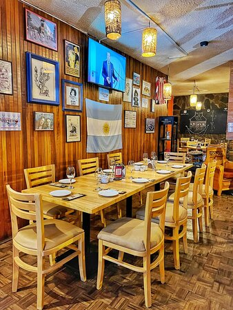
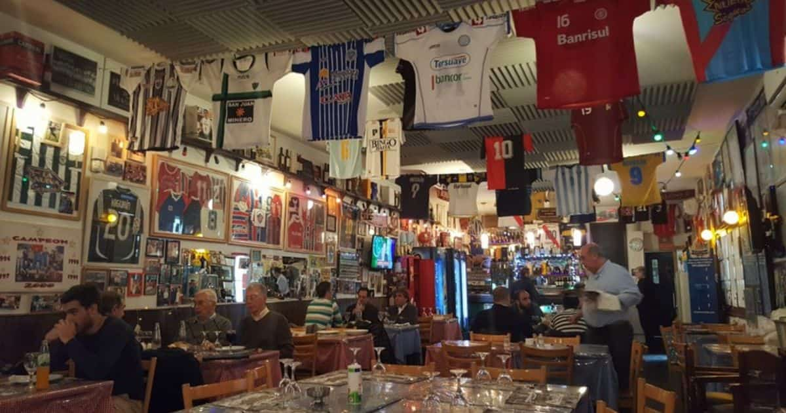
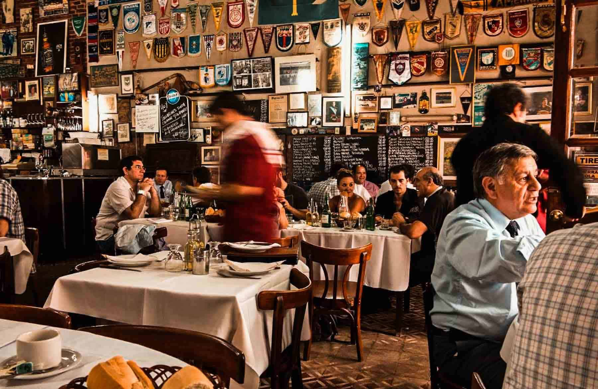
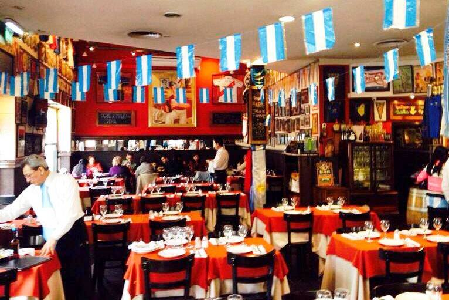

¿Quiénes Somos?
Somos un grupo de amigos que amamos compartir buenos momentos acompañados de ¡buenas comidas! Y, como todo lo bueno se comparte, les dejamos los mejores bodegones (que conocimos hasta ahora) para que puedan comprobarlo ustedes mismos y compartir su experiencia como nosotros.
¿Qué es un bodegón?
  
En Argentina, además de tener los platos y postres nacionales, existe la “cocina tradicional argentina”, que es una mezcla de platos italianos, españoles y alemanes, todos juntos en un mismo menú. Esta característica se da gracias a la emigración tan fuerte que tuvo nuestro país en la antigüedad. Según algunos periodistas y críticos gastronómicos, al bodegón lo caracteriza “la sensación de pertenencia a la ciudad" , que transmite a través de la abundancia y accesibilidad de su comida, y de su ambiente. Es claramente notable cuando estás frente a un bodegón argentino. Ni bien entras por la puerta, es probable que lo primero que notes sea su peculiar decoración: banderines de fútbol, camisetas deportivas enmarcadas, jarras de pingüino, patas de jamón y salames colgando por las paredes, botellas de vino por todos lados, fotos antiguas o las típicas publicidades de marcas antiguas, y un montón de cacharritos por los estantes. En un bodegón, las porciones deben ser generosas; la comida, simple y casera, y, bajo ningún aspecto, se aceptan innovaciones. Sumado a esta gran lista, los precios deben ser accesibles también. Todo bodegón honesto ofrece milanesa napolitana, pastas, estofados, tortillas, rabas, panqueques y flan con dulce de leche. Cada bodegón porteño es un espacio de historia viva, por eso sentarse a sus mesas es una de las mejores maneras de conocer la ciudad. Aquí, vas a encontrar de todo en un mismo sitio. Muchas anécdotas e historias que, seguramente, los dueños querrán contarte al traerte la carta. Es como entrar a su propia casa, a la trayectoria de su familia, abuelos y más. No dejes de permitirte entrar en estos hermosos y pintorescos lugares tan de barrio. Seguramente, vas a salir satisfecho de tanta comida, deleitado con tanta exquisitez y maravillado con su decoración. Lugares para sentirte cómodo, comer bien y gastar poco.
En esta página, hablaremos de tres bodegones en los que nuestra experiencia ha sido increíble. A continuación los compartiremos.